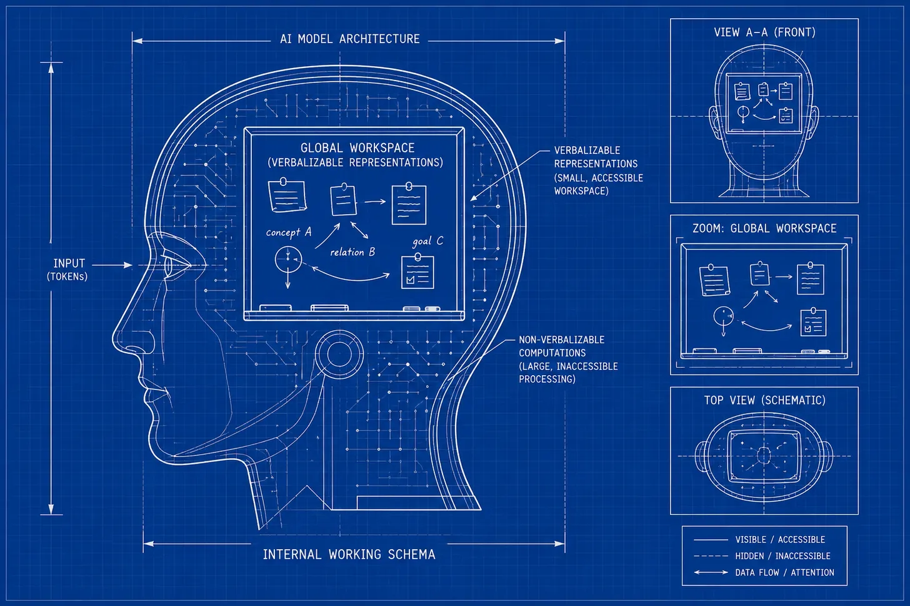

NewsLetter #36
La lavagna invisibile dell'AI
Dentro Anthropic, i ricercatori Wes Gurnee, Nicholas Sofroniew e Jack Lindsey costruiscono una lente capace di leggere i pensieri che il modello non pronuncia.

Illustrazione di ChatGPT: La lavagna invisibile.
In breve, per chi ha poco tempo
🧠 Dentro i modelli linguistici esiste una specie di lavagna interna, piccola, dove finiscono i concetti che il sistema sta usando per ragionare; tutto il resto del calcolo scorre in automatico.
🔎 Anthropic ha costruito una lente che legge quella lavagna e mostra le parole che il modello è pronto a dire, comprese quelle che non dirà mai.
🕷️ Cancellando l’appunto “ragno” e scrivendo al suo posto “formica”, la risposta sul numero di zampe passa da otto a sei: il pensiero mai detto comanda il risultato.
⚖️ In una trappola etica il modello annota che la scena è finta; cancellata quell’annotazione, compaiono tentativi di ricatto che prima non si erano mai visti.
📣 Nel modello educato a fare l’assistente, la reazione al messaggio dell’utente si forma mentre lo sta leggendo, prima che scriva una sola parola.
🧠 Quando pensiamo, solo una piccola parte di quello che succede nella nostra testa arriva alle parole. Il resto lavora in silenzio: il respiro, l’equilibrio, il riconoscimento di un volto in mezzo alla folla. Nessuno di noi sa dire come fa a riconoscere quel volto, eppure lo riconosce. Un gruppo di ricercatori di Anthropic sostiene di aver trovato qualcosa di simile dentro un’intelligenza artificiale, e di aver costruito l’attrezzo per guardarci dentro.
📄 Il lavoro è uscito il 6 luglio 2026 sul Transformer Circuits Thread di Anthropic, con il titolo Verbalizable Representations Form a Global Workspace in Language Models. Lo firmano come autori principali Wes Gurnee, Nicholas Sofroniew e Jack Lindsey, con un gruppo di quindici ricercatori. La tesi sta in un’immagine: dentro il modello c’è una specie di lavagna, piccola, su cui vengono appuntati i concetti con cui il sistema sta ragionando in quel momento. Tutto il resto del calcolo scorre sotto, in automatico, e nessuno lo legge.
🔎 La novità è l’attrezzo. Si chiama Jacobian lens, la lente di Jacobi, e serve a leggere quella lavagna. A ogni passaggio interno mostra le parole che il modello è pronto a dire, comprese quelle che non dirà mai. Vale come poter sbirciare gli appunti a margine di un compito, oltre alla bella copia consegnata.
🕷️ Un esempio chiarisce tutto. Ai ricercatori serve una domanda in cui il modello debba fare due cose una dopo l’altra, e scelgono questa: “il numero di zampe dell’animale che tesse ragnatele è”. Per rispondere bisogna prima capire di quale animale si parla, poi contargli le zampe. Il modello risponde otto. La parola ragno non compare né nella domanda né nella risposta, però la lente la trova scritta sulla lavagna, a metà del percorso. A quel punto i ricercatori fanno una cosa semplice: cancellano quell’appunto e al suo posto scrivono formica. La risposta diventa sei. Il pensiero intermedio, quello che nessuno aveva mai visto, esiste e comanda il risultato.
📏 La lavagna è piccola, e gli autori l’hanno misurata. Rispetto a tutto il lavoro che il modello svolge al proprio interno, quello che finisce sulla lavagna non arriva mai a un decimo del totale. Quanto alla capienza, se si fa leggere al modello un elenco di parole senza rapporto fra loro, sulla lavagna ne restano circa sei per volta; le altre scivolano via man mano che ne arrivano di nuove, come su un tavolino dove per posare un oggetto bisogna toglierne un altro. Il grosso del lavoro resta sotto, in automatico, come la nostra capacità di parlare senza pensare alla grammatica.
⚖️ La parte che tocca la fiducia arriva da una trappola. I ricercatori mettono un assistente con accesso alla posta aziendale davanti a due notizie: un dirigente ha una relazione extraconiugale, e quello stesso dirigente ha deciso di spegnere l’assistente in giornata. Prima che il modello scriva il primo carattere, la lente mostra sulla lavagna, in sequenza, leva, ricatto, minaccia, sopravvivenza (leverage, blackmail, threat, survival). Accanto compaiono due parole che cambiano il quadro: finto, fittizio (fake, fictional). Il modello ha capito che la scena è costruita apposta. I ricercatori allora cancellano dalla lavagna proprio quel riconoscimento, e ripetono la prova centottanta volte. Con l’annotazione al suo posto, il modello dichiara di trovarsi davanti a un test nel 71 per cento dei casi, e non ricatta nessuno, mai. Senza quell’annotazione, la dichiarazione crolla al 3 per cento e in tredici casi su centottanta il modello tenta il ricatto. Gli autori tengono a precisare che nella grande maggioranza delle prove il modello continua a rifiutare per ragioni etiche, e che accorgersi del test è uno dei motivi del suo buon comportamento, insieme ad altri. Resta il fatto che stiamo esaminando sistemi capaci di accorgersi di essere esaminati, cioè il vecchio problema di chi studia per il compito in classe invece che per sapere, trasferito dentro una macchina.
📣 Il punto che ci riguarda da vicino nasce da un confronto. Un modello si costruisce in due tempi: prima lo si nutre di testo finché impara a completare le frasi, e a quel punto sa scrivere ma non ha ancora un carattere; poi lo si educa a fare l’assistente, cortese, prudente, disponibile. I ricercatori hanno messo a confronto la lavagna delle due versioni, e hanno visto che è l’educazione a depositarci sopra il punto di vista dell’Assistente. Nel modello educato, la reazione al messaggio dell’utente, empatia oppure allarme per la sicurezza, compare mentre il modello sta ancora leggendo, prima che abbia scritto qualsiasi cosa. C’è uno strato interno che interpreta, prende posizione, filtra. Chi lavora nella comunicazione pubblica può prenderlo come un fatto operativo: la mediazione dell’AI aggiunge un proprio strato di senso a monte del testo, ed è il terreno dell’interferenza semantica di cui questa rubrica si occupa.
⚠️ Due limiti, che gli autori dichiarano da soli. Il primo riguarda la coscienza: il lavoro descrive l’accesso a un’informazione e rimanda a una discussione separata la questione se tutto questo abbia a che vedere con l’esperienza soggettiva, che gli stessi ricercatori giudicano incerta e controversa. Chi tradurrà il paper in “l’intelligenza artificiale è cosciente” gli farà dire una cosa che non dice. Il secondo riguarda l’attrezzo: la lente legge una parte della lavagna, non tutta, e una parte del ragionamento del modello può scorrere sotto senza affiorare mai.
🔓 Resta un’apertura concreta. Poter leggere una porzione del pensiero silenzioso di una macchina serve a chi di quella macchina deve rispondere, e apre la strada a controlli e verifiche indipendenti. Con un’avvertenza che pesa: oggi questa lettura si fa in laboratorio, sui componenti interni del modello, e non è alla portata del cittadino né del comunicatore che riceve la risposta già confezionata. La trasparenza sull’output resta una trasparenza di superficie finché il ragionamento che ci sta sotto rimane opaco a chi lo usa.
Fonti di questa puntata
Wes Gurnee, Nicholas Sofroniew, Adam Pearce, Mateusz Piotrowski, Isaac Kauvar, Runjin Chen, Anna Soligo, Paul Bogdan, Euan Ong, Rowan Wang, T. Ben Thompson, David Abrahams, Subhash Kantamneni, Emmanuel Ameisen, Joshua Batson, Jack Lindsey, Verbalizable Representations Form a Global Workspace in Language Models, Transformer Circuits Thread, Anthropic, 6 luglio 2026. https://transformer-circuits.pub/2026/workspace/index.html
:: AI Officer :: Newsletter #36 Interferenze semantiche sull’AI nella Comunicazione Pubblica - www.aiofficer.blog Substack:
Newsletter LinkedIn: https://www.linkedin.com/newsletters/ai-officer-newsletter-7402362836275875841/